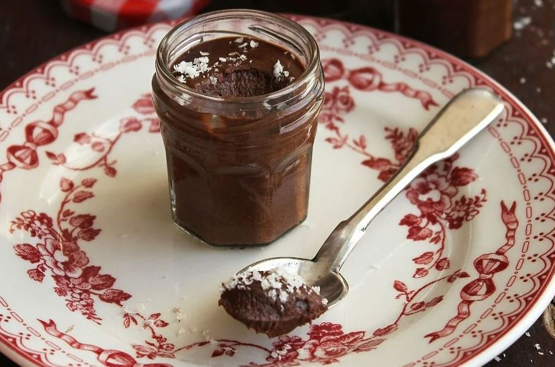

Tarif: yemek.com sitesinden alınmıştır
Kaç kişilik: 5 kişilik Hazırlama süresi:
20 dk Pişirme süresi: 20 dk
Gerekli Malzemeler
- 1 lt süt
- 3/4 su bardağı toz şeker
- 1/2 su bardağı kakao
- 2 küçük kare bitter çikolata
- 2 yemek kaşığı un
- 2 yemek kaşığı buğday nişastası
- 1 yemek kaşığı vanilya
- 1 tatlı kaşığı tereyağ
Hazırlanışı
- Sütü derin bir tencereye aktarın. Toz şeker, kakao, un, buğday nişastası ve bitter çikolata ezmesi katıp
pürüzsüz bir kıvam alana kadar karıştırın.
- Pürüzsüz bir kıvam alana kadar karıştırdığınız sütlü karışımı ocağa alın. Kısık ateşte, karıştırarak
koyu bir kıvam alana kadar pişirin.
- Ocaktan aldığınız muhallebi karışımına vanilya özütü ve tereyağı katıp blender yardımıyla pürüzsüz bir
kıvam alana kadar karıştırın.
- Servis kaselerine paylaştırdığınız tatlıyı soğuttuktan sonra sevdiklerinizle paylaşın.
Servis Önerisi:
Servis öncesinde pudra şekeri eleyebilir, rendelenmiş Hindistan cevizi ya da file fındık parçalarıyla
süsledikten sonra servis edebilirsiniz.
Daha fazla tarif için tıklayın :)